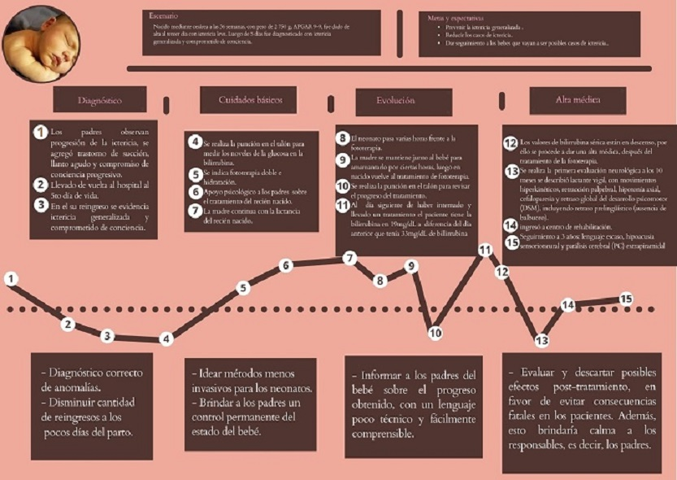

Mapa de empatía

(1)
Mapa de viaje
(2)(3)
Diagrama de Ishikawa
(4)
Contexto social
A nivel mundial
Como se muestra en la Figura 1.(5) Los 10 países con mayores tasas de mortalidad por ictericia neonatal se encuentran en áfrica y Asia, la mortalidad inducida por bilirrubina estuvo constantemente entre las 15 primeras causas de mortalidad neonatal en estos 10 países y entre las 20 primeras causas de mortalidad de menores de 5 años en todos menos Indonesia, Angola y Kenia.(5)
La progresión de ictericia a encefalopatía aguda por bilirrubina o kernicterus aumenta el riesgo de mortalidad neonatal. Se estima que afecta a 481,000 bebés anualmente, dejando a 63,000 con deterioro neurológico moderado o grave a largo plazo y causando 114,000 muertes.(6)
Los datos reflejan la trascendencia clínica de la hiperbilirrubinemia neonatal para la Salud Pública, como una condición de salud que requiere atención global, incluida como meta de la agenda 2030 para el desarrollo sostenible, que tiene como objetivo reducir la mortalidad neonatal a 12 casos por cada 1.000 nacidos vivos. (6)
Cifras alrededor del mundo

En Turquia
La ictericia es la causa más común de ingreso hospitalario o rehospitalización en la primera semana de vida . La transfusión redujo las tasas de mortalidad y morbilidad inducidas por la bilirrubina. Sin embargo, la encefalopatía aguda por bilirrubina y el kernicterus todavía se notifican en países de ingresos bajos y medianos e incluso países de ingresos altos. La incidencia de ictericia en los países desarrollados es de 25 ± 41, 17 ± 45,y 2 ± 36 casos por 100.000 nacidos vivos.(7)

En Indonesia
Una encuesta en la sala de neonatología del hospital público Sidoarjo en enero a diciembre de 2013 mostró que hubo 391 (12%) bebés nacidos con bajo peso al nacer de 3.210 natalidades y 375 (9%) ictericia neonatal registrada de 3.878 bebés. La tasa de mortalidad infantil en Indonesia en 2007 fue de 34 por 1000 nacimientos y la Tasa de mortalidad infantil en Indonesia en 2012 fue de 32 por cada 1.000. La incidencia de ictericia neonatal en Indonesia alcanzó el 50% de los recién nacidos a término y en recién nacidos prematuros alcanzó el 58%.(8) En la Sala de Perinatología del Hospital Dustria de Indonesia se encontró que el bajo peso al nacer aumenta el riesgo de morbilidad y mortalidad (es 4 veces mayor que el de los pacientes sin bajo peso al nacer). Los resultados mostraron que hubieron 42 (72,8%) casos de bajo peso al nacer con ictericia neonatal con 35 (83,3%) bajo peso al nacer pretérmino y 7 (16,7%) bajo peso al nacer a término El bajo peso al nacer, tanto en los lactantes prematuros como en la edad gestacional a término, suele producir ictericia.(9)
En Africa
Las patologías neonatales siguen siendo un problema importante de salud pública en los países en desarrollo, en particular en los países del África subsahariana donde se encuentran responsable del 40% de las muertes de niños menores de 5 años. Según la OMS, de los 130 millones de nacimientos cada año, 4 millones mueren durante las primeras cuatro semanas de vida. En todo el mundo, alrededor de 14,1 millones de recién nacidos requieren fototerapia para ictericia, de los cuales 6 millones no tienen acceso a tratamiento; esta que clasifica la ictericia neonatal entre las 15 posibles causas de mortalidad neonatal(10) y hay otros estudios han mostrado que la ictericia representó el 34% de las muertes neonatales en Port Harcourt Nigeria, 15% en Ile-Ife, Nigeria, 14% en el distrito de Kilifi Kenia 6,7% en El Cairo Egipto y 5,5% en Lagos Nigeria(11)
En EEUU
De acuerdo al Fondo de las Naciones Unidas para la Infancia (UNICEF) (2018) en su informe “Cada vida cuenta”, EE.UU registra una tasa de mortalidad neonatal de 4 / 1000 nacidos vivos, mientras que la media de países ingresos altos es de 3/1000 nacidos vivos.(12)
A nivel Latinoamérica
La literatura existente, y luego de haber revisado artículos que investigaron sobre ictericia neonatal a nivel latinoamericano llegamos a la conclusión que es escaso los estudios realizado. Los datos que se registraron en América del Sur Bolivia y Chile han reportado altas prevalencias de 76,3% y 69,2%, y en Perú alrededor de 7%, la cual se han realizado pocos estudios en Perú también.(13), (14), (15), (16)
Figura: estadísticas de casos de ictericia en latinoamérica. Fuente: (15)
Datos en Latinoamerica
En Brasil nordeste y Piauí
En los últimos 10 años, hubo 1.008 muertes en Brasil debido a ictericia neonatal y su complicación más dañina, el kernicterus(2) El Gráfico 1(2) muestra la comparación de la mortalidad por kernicterus entre Brasil, Nordeste y Piauí en la que se observa una tendencia a la disminución de casos de muerte(6)
En Cuba
En la actualidad, Cuba mantiene una de las menores tasas de mortalidad infantil en toda América, pese a poseer unos ingresos medianos altos y un régimen político distinto al de otros países latinoamericanos, el cual sí ofrece políticas de salud y las gestiona adecuadamente, en el año 2017 logró disminuir las muertes a 4.1 por cada 1000 Nacidos Vivos, que se tradujo en una disminución de casi el 5% con respecto al registro del año 2016 (4.3 muertes infantiles / 1 000 nacidos vivos)(17)
En Ecuador
En el Hospital José Carrasco Arteaga de Cuenca en Ecuador se registraron 2 02 casos de hiperbilirrubinemia, constituyendo el 18,18% de un total de 1243 ingresos durante el período enero 2015- diciembre 2017. Mientras que, según datos ofrecidos por el servicio de Neonatología del Hospital Provincial General Docente de Riobamba, durante los años 2017 y 2018 fueron atendidos 1216 neonatos, de los cuales 683 fueron diagnosticados con hiperbilirrubinemia, cifra que representa el 56,2 % (18)
En Paraguay
En el año 2017 en el departamento de neonatología del Hospital Materno Infantil de Santísima Trinidad de Paraguay fueron reportados 205 ingresos de recién nacidos al área de neonatología, 40 de ellos, (20%) fueron ingresados con Ictericia clínica por hiperbilirrubinemia, (36 recién nacidos (18%) nacidos dentro del hospital y 4 de ellos (2%) derivados de otro centro asistencial).(19)
A nivel nacional
Todo recién nacido tiene un 50-70% de probabilidad de desarrollar ictericia durante la primera semana de vida. En el Perú en el año 2004 Los pocos estudios realizados reportaron que la incidencia para Ictericia Neonatal es de 39/1000 nacidos vivos. (20)(21) siendo las DISAS de Lima y Callao las que reportan el 48% de los casos, y a nivel regional Cusco, Arequipa, La Libertad e Ica, las que reportan mayor tasa de incidencia. (22) La principale causas de egresos hospitalarios en la etapa de vida niño y sexo, según el reporte de la OFICINA DE ESTADISTICA E INFORMATICA del Hospital Cayetano Heredia del 2018, la ictericia neonatal tuvo un registro del 65.4% del total de la etapa de vida entre 0-29 días de nacidos. (22)(23)
Figura: gráficos de ictericia a nivel nacional Fuente: (20), (22),(23)
Costo de oportunidades
La pobre condición socioeconómica afecta de muchas formas la atención a los recién nacidos con ictericia, en primer lugar, una significativa proporción de nacimientos ocurre fuera de los hospitales, lo que obliga a la madre a reconocer la presencia de ictericia en su bebé sin estar capacitada para determinar su gravedad.(24)
El kernicterus es una enfermedad devastadora que aún está presente en la realidad nacional. Es una causa de parálisis cerebral prevenible, por lo que a largo plazo incluye fisioterapia y otros tipos de terapias, fármacos y, a veces, cirugía. En consecuencia supondría gastos económicos a su familia a largo plazo. (25)
Además de ello existen efectos adversos a corto o largo plazo, como la interferencia con el vínculo materno-infantil cuando el neonato recibe tratamiento como es el de fototerapia.(26)
Contexto económico
figura 1
figura 2
figura 3
En el gráfico 1(27) se puede observar la cantidad presupuestada para la atención de recién nacidos con complicaciones y que requieren UCI, también se observa el promedio anual de recién nacidos que ingresan por problemas de ictericia. Con respecto al total, en el primer caso (RN con complicaciones), los problemas de ictericia abarcan un 2.0037%; en el segundo caso, abarca un 1.016%.
Con dichos datos porcentuales, se puede sacar el presupuesto que el MINSA destina a la Ictericia neonatal. A partir de los cálculos realizados en el gráfico 3 el presupuesto que se destina hacia ictericia neonatal es de S/. 3,092,014.365 aproximadamente.
Figura 1: Presupuesto multianual programa presupuestal Salud materno neonatal. Fuente: (27)
Figura 2: Programación anual -meta física y financiera de productos: 2019 Fuente: (28)
Figura 3: Total por año destinado a la ictericia neonatal por parte del MINSA Fuente: Elaboración propia
figura 4
Lima representa el 38.063% del total del presupuesto asignado a salud, por ende, extrapolando los datos anteriores, se puede aproximar que en Lima hay un presupuesto disponible de S/1,176,913.531 para la ictericia neonatal.(29)(30)
Figura 4: Ejecución presupuestal en salud por departamento, 2019 Fuente: (29)
Gastos por parte del paciente
Para el diagnóstico de la ictericia, se requiere realizar un examen de sangre para identificar la cantidad de bilirrubina en la sangre. Los costos para este examen disponibles en Lima varían desde los S/18 hasta los S/22 por un examen en centros de salud privados; los bebés con ictericia en fase 2 requieren de más de 2 exámenes para verificar su progreso en la enfermedad.(31), (32)
Para el tratamiento de la ictericia de los bebés en fase 3, se requiere de sesiones de fototerapia para mejorar su salud. El costo de la fototerapia varía desde los S/41.3 (parcial) hasta los S/82.55 (cuerpo completo) por sesión en centros de salud privados. Un neonato con ictericia requiere de hasta 3 sesiones de fototerapia por semana. (33), (34)
Definición del problema
Para evitar que el neonato llegue a fase 3 (lo cual involucra más tiempo del recién nacido en UCI y en tratamiento) se tienen que realizar constantes exámenes de bilirrubina con métodos no invasivos luego de su nacimiento. Actualmente, se le da de alta prematuramente al neonato lo cual implica que no se realizan los exámenes correspondientes. Para evitar causar dolor al paciente, ya que la prueba más usada y con más acceso actualmente es solo la prueba de sangre.
Blbiografia
1.CARMEN GARCÍA MÉNDEZ:. ICTERICIA NEONATAL Y CUIDADOS DE ENFERMERÍA [Internet]. Repositorio.unican.es. 2019 [citado el 7 de septiembre de 2021]. Disponible en: https://repositorio.unican.es/xmlui/bitstream/handle/10902/19934/GARCIA%20MENDEZ%2C%20CARMEN.pdf?sequence=1&isAllowed=y
2.GUÍAS DE PRÁCTICA CLÍNICA PARA LA ATENCIÓN DEL RECIÉN NACIDO [Internet]. 1ª ed. Lima: Ministerio de Salud, Instituto Nacional Materno Perinatal, Instituto Especializado de Salud del Niño; 2021 [citado el 10 de septiembre de 2021]. Disponible en: http://bvs.minsa.gob.pe/local/MINSA/1027_DGSP198.pdf
3.José López Sastre J, Josep Figueras Alcoy J. Protocolos de Neonatología (En revisión) | Asociación Española de Pediatría [Internet]. Aeped.es. 2008 [citado el 3 de septiembre de 2021]. Disponible en: https://www.aeped.es/documentos/protocolos-neonatologia-en-revision
4.GUÍAS DE PRÁCTICA CLÍNICA PARA LA ATENCIÓN DEL RECIÉN NACIDO [Internet]. 1ª ed. Lima: Ministerio de Salud, Instituto Nacional Materno Perinatal, Instituto Especializado de Salud del Niño; 2021 [citado el 10 de septiembre de 2021]. Disponible en: http://bvs.minsa.gob.pe/local/MINSA/1027_DGSP198.pdf
5.Olusanya BO, Teeple S, Kassebaum NJ. The contribution of neonatal jaundice to global child mortality: Findings from the GBD 2016 Study. Pediatrics. 2018;141(2).
6.Adam DM, Science B, College C, مگردچیان ا, Fay DL, Dhaka D, et al. 済無No Title No Title No Title. Angew Chemie Int Ed 6(11), 951–952 [Internet]. 2020;7(1):283. Available from: http://www.nostarch.com/javascriptforkids%0Ahttp://www.investopedia.com/terms/i/in_specie.asp%0Ahttp://dspace.ucuenca.edu.ec/bitstream/123456789/35612/1/Trabajo de Titulacion.pdf%0Ahttps://educacion.gob.ec/wp-content/uploads/downloads/2019/01/GUIA-METODOLOGIC
7.Erdeve O, Okulu E, Olukman O, Ulubas D, Buyukkale G, Narter F, et al. The Turkish neonatal jaundice online registry: A national root cause analysis. PLoS One.
8.Puspita N. The Effect of Low Birthweight on the Incidence of Neonatal Jaundice in Sidoarjo. J Berk Epidemiol. 2018;6(2):174.
9.Ayukarningsih Y, Wahyudin, Pratiwi ST, Lailani N. The Overview of Low Birth Weight Infants with Incidence of Neonatal Jaundice in Perinatology Ward at Dustira
10.hsan, Yudi N. Rizky KB. Research Article Research Article. Arch Anesthesiol Crit Care. 2018;4(4):527–34.
11.Slusher TM, Zamora TG, Appiah D, Stanke JU, Strand MA, Lee BW, et al. Burden of severe neonatal jaundice: A systematic review and meta-analysis. BMJ Paediatr Open. 2017;1(1).
12.UNICEF. (2018). Cada vida cuenta: La urgente necesidad de poner fin a las muertes de los recién nacidos. Fondo de las Naciones Unidas para la Infancia. Ginebra, Suiza.
14.Evidencias y Recomendaciones Catálogo Maestro de Guías de Práctica Clínica GPC-IMSS-262-19 [Internet]. 1ª ed. México: Instituto Mexicano del Seguro Social; 2021 [citado el 16 de septiembre de 2021]. Disponible en: https://www.imss.gob.mx/sites/all/statics/guiasclinicas/262GER.pdf
15.Ñacari Vera, M. (2018). Prevalencia de ictericia neonatal y factores asociados en recién nacidos a término. Revista Médica Panacea, 2(1). https://revistas.unica.edu.pe/index.php/panacea/article/view/29/29
16.Ñacari Vera Miguel Ñ. Prevalencia de ictericia neonatal y factores asociados en recién nacidos a término [Internet]. Alicia.concytec.gob.pe. 2019 [citado el 6 de septiembre de 2021]. Disponible en: https://alicia.concytec.gob.pe/vufind/Record/2225-6989_50d0e2cc164c17d081201e9335ff3f61
17.Ministerio de Salud Pública. (2017). Anuario estadístico de salud. La Habana, Cuba. Recuperado de: http://files.sld.cu/dne/files/2017/05/Anuario_Estad%C3%ADstico_de_Salud_e_2016_edici%C3%B3n_2017.pdf
18.Pacheco Osorio, W. A. (2018). Pontificia Universidad Catolica del Ecuador repositorio de tesis de grado y posgrado. Pontificia Universidad Católica del Ecuador, 31-32.
19.Isabel D, Palacios L. ICTERICIA NEONATAL EN EL HOSPITAL MATERNO INFANTIL DE SANTÍSIMA TRINIDAD , AÑO 2017 Coronel Oviedo , Paraguay. 2019;1–84.
20.Ministerio de Salud. (2007). Guías de práctica clínica para la atención del recién nacido: guía técnica. Lima, Perú. Recuperado de http://bvs.minsa.gob.pe/local/minsa/1027_dgsp198.pdf
21. San H, Lurigancho J De, Manrique A, Mucha C. Mortalidad neonatal en el Hospital San Juan de Lurigancho : UMCIN , una alternativa inmediata para mejorar la situación . 2018;(June):0–15.
22. Biblioteca Central del Ministerio de Salud B. GUÍAS DE PRÁCTICA CLÍNICA PARA LA ATENCIÓN DEL RECIÉN NACIDO [Internet]. 1ª ed. Lima-Perú: Ministerio de Salud, Instituto Nacional Materno Perinata; 2007 [citado el 7 de septiembre de 2021]. Disponible en: http://bvs.minsa.gob.pe/local/MINSA/1027_DGSP198.pdf
23.OFICINA DE ESTADÍSTICA E INFORMÁTICA [Internet]. 1ª ed. Lima: OFICINA DE ESTADÍSTICA E INFORMÁTICA; 2018 [citado el 1 de septiembre de 2021]. Disponible en: http://www.hospitalcayetano.gob.pe/PortalWeb/wp-content/uploads/2019/04/CUADROS_HOSPITALIZACION_2018.pdf
24.Evidencias y Recomendaciones Catálogo Maestro de Guías de Práctica Clínica GPC-IMSS-262-19 [Internet]. 1ª ed. México: Instituto Mexicano del Seguro Social; 2021 [citado el 16 de septiembre de 2021]. Disponible en: https://www.imss.gob.mx/sites/all/statics/guiasclinicas/262GER.pdf
25.Alireza Minagar A. Parálisis cerebral: MedlinePlus enciclopedia médica [Internet]. Medlineplus.gov. 2021 [citado el 10 de septiembre de 2021]. Disponible en: https://medlineplus.gov/spanish/ency/article/000716.htm
26.Inamori G, Isoda Y, Song Z, Uozumi A, Ito S, Ota H. Wearable Optical Device for Real-Time Monitoring of Newborn Jaundice. 2019 IEEE 32nd International Conference on Micro Electro Mechanical Systems (MEMS). 2019
27.Minsa. Programa Presupuestal Materno Neonatal. Ministerio de Salud [Internet]. 2019; Available from: https://www.minsa.gob.pe/presupuestales/doc2019/pp/anexo/ANEXO2_2.pdf
28.Gob.pe. [citado el 15 de septiembre de 2021]. Disponible en: https://www.minsa.gob.pe/presupuestales2017/doc2018/pp/anexo/2/ANEXO2.pdf
29.Org.pe. [citado el 15 de septiembre de 2021]. Disponible en: https://www.comexperu.org.pe/upload/articles/reportes/informe-calidad-001.pdf
30.Gob.pe. [citado el 15 de septiembre de 2021]. Disponible en: https://www.minsa.gob.pe/presupuestales/doc2019/pp/anexo/ANEXO2_2.pdf
31.Multilab. Bilirrubinas (Totales y Fraccionadas) - Multilab - Qué es, precio, preparación [Internet]. Com.pe. [citado el 15 de septiembre de 2021]. Disponible en: https://www.multilab.com.pe/examen/85/bilirrubinas-totales-fraccionadas
32.Precios de análisis clínicos [Internet]. Com.pe. 2018 [citado el 15 de septiembre de 2021]. Disponible en: https://www.citolab.com.pe/precios-de-analisis-clinicos/
33.Fototerapia Aparatología [Internet]. Iselamendez.mx. 2012 [citado el 15 de septiembre de 2021]. Disponible en: https://iselamendez.mx/fototerapia-aparatologia/
34.a fototerapia es una t�cnica empleada en neonatos para disminuir los niveles de bilirrubina en el reci�n nacido [Internet]. Enfermeriadeciudadreal.com. [citado el 15 de septiembre de 2021]. Disponible en: https://www.enfermeriadeciudadreal.com/articulo_imprimir.asp?idarticulo=57&accion